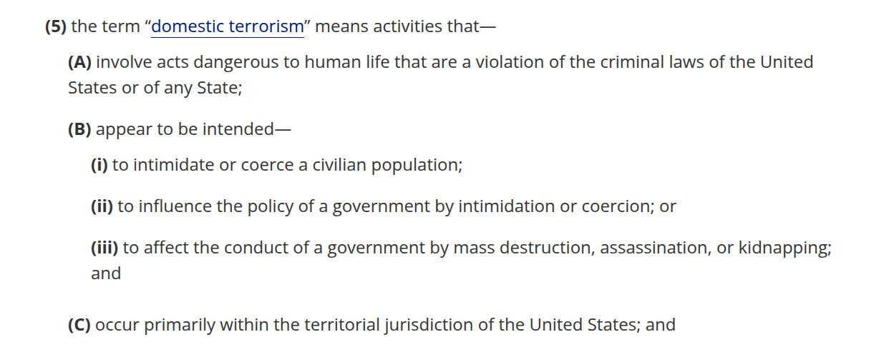

Today’s Agenda
Section 3: Current Challenges in American Environmentalism
3.2 Capitalism: The “Need” for Growth Versus an Exhaustible Environment
- Environmental Advocacy vs Eco-Terrorism
Justin Leinaweaver (Fall 2025)
Field Trip: Springfield Noble Hills Sanitary Landfill
- Thursday, Nov 20th at 9:30a

Capitalist Systems
Worster’s Dust Bowl Argument
American culture is capitalist
Capitalism replaces our national identity with one focused on being an isolated, economically stressed individual (consumer)
Capitalism teaches us that nature is a resource and our survival is separate from nature’s survival
Capitalism shortens time horizons and creates incentives to ignore science
Therefore, capitalism caused the Dust Bowl
Dauvergne’s Argument (Part 1)
Dauvergne’s Argument
The Exploitative Strategies of Capitalism
Western imperialism
Economic Globalization
Environmentalism of the Rich
Dauvergne Evaluates Environmentalism (Chapter 7)
Capitalism Creates an Environmentalism of the Rich
“More important, however, has been the innate power of consumer capitalism to distort and assimilate counternarratives and countermovements, especially critiques of wealth and economic growth” (p76).
Per Dauvergne, what are the “right” vs “wrong” ways to do environmental advocacy?
Modern environmentalism is a creation of the West and is now too responsive only to the West (Chapter 7)
Capitalism shapes activism and activists to fit into the system and disappears the outliers (Chapter 8)
Radical environmentalism is necessary but should move forward in non-violence (Chapter 9)

18 U.S. Code 2331
Dauvergne’s Argument
The Exploitative Strategies of Capitalism
Western imperialism
Economic Globalization
Environmentalism of the Rich
For Next Class
Dauvergne’s (2016) Environmentalism of the Rich
Chapter 10, 11 and 12
Canvas reflection